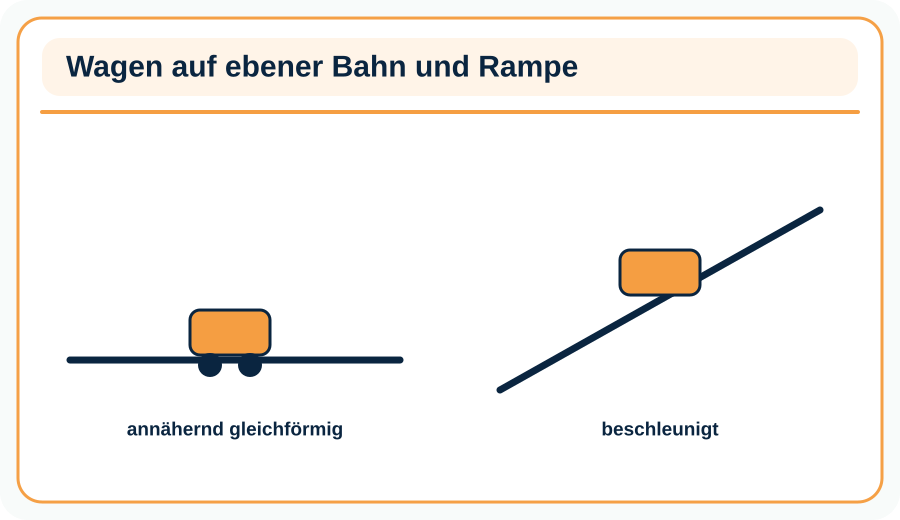
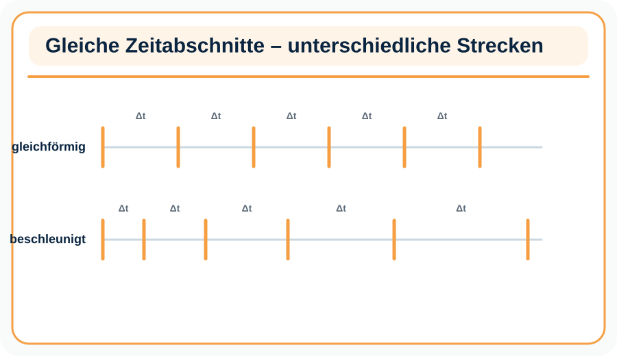

Dein Lernfortschritt0 / 6 Pflichtstationen
1
Staunen und vermuten
Bei gleichen Zeitabständen verraten die Abstände aufeinanderfolgender Positionen, ob eine Bewegung gleichförmig, beschleunigt oder verzögert ist.
Die Abstände in einem Stroboskopbild werden immer größer. Was folgt?
Weitere Tipps nach jeweils 30 Sekunden.
🔒 Bearbeite zuerst die vorherige Pflichtstation richtig.
2
Experiment vorbereiten und auswerten
Plane den Aufbau, führe den Versuch sicher durch und leite eine Beobachtung ab.

Material
- Modellwagen oder Kugel
- waagerechte Bahn und Rampe
- Maßband
- Kamera/Tablet
- Positionsmarken
⚠ Sicherheit
Bahnende sichern, Wagen auffangen und Finger aus dem Fahrweg halten. Rampe stabil aufbauen.
Durchführung
- Nimm Positionen in gleichen Zeitabständen auf.
- Vergleiche waagerechte Bahn, Rampe und Bremsstrecke.
- Ordne die Bewegungsarten anhand der Abstände zu.
Welche Spur passt zu gleichförmiger Bewegung?
Weitere Tipps nach jeweils 30 Sekunden.
🔒 Bearbeite zuerst die vorherige Pflichtstation richtig.
3
Lokale Simulation untersuchen
Verändere Parameter gezielt. Formuliere erst eine Vorhersage, dann eine Wenn-dann-Aussage.

Was ist bei einer verzögerten Bewegung zu beobachten?
Weitere Tipps nach jeweils 30 Sekunden.
🔒 Bearbeite zuerst die vorherige Pflichtstation richtig.
4
Fehlvorstellung prüfen
Finde die fachlich problematische Aussage und korrigiere sie gedanklich.
Welche Aussage ist falsch?
Weitere Tipps nach jeweils 30 Sekunden.
🔒 Bearbeite zuerst die vorherige Pflichtstation richtig.
5
Auf Alltag und Technik übertragen
Nutze das Modell in einem neuen Kontext und begründe die Entscheidung.
Ein Auto fährt mit konstant 50 km/h geradeaus. Welche Bewegungsart liegt idealisiert vor?
Weitere Tipps nach jeweils 30 Sekunden.
🔒 Bearbeite zuerst die vorherige Pflichtstation richtig.
6
Wissen sichern
Beantworte alle drei Abruffragen. Das Glossar dient anschließend zur Kontrolle.
Was bleibt bei gleichförmiger Bewegung konstant?
Was nimmt beim Beschleunigen zu?
Was zeigt ein Stroboskopbild?
Fachbegriffe
gleichförmige BewegungBewegung mit konstanter Geschwindigkeit.
beschleunigte BewegungBewegung mit zunehmender oder veränderter Geschwindigkeit.
verzögerte BewegungBewegung mit abnehmendem Geschwindigkeitsbetrag.
Weitere Tipps nach jeweils 30 Sekunden.
🔒 Bearbeite zuerst die vorherige Pflichtstation richtig.
7
Forscherauftrag
Diese Vertiefung ist freiwillig und zählt nicht zum Pflichtfortschritt.
Entwirf eine Spur mit vier Phasen: beschleunigt, gleichförmig, verzögert, Stillstand.
Deine Notiz wird nur auf diesem Gerät lokal gespeichert.